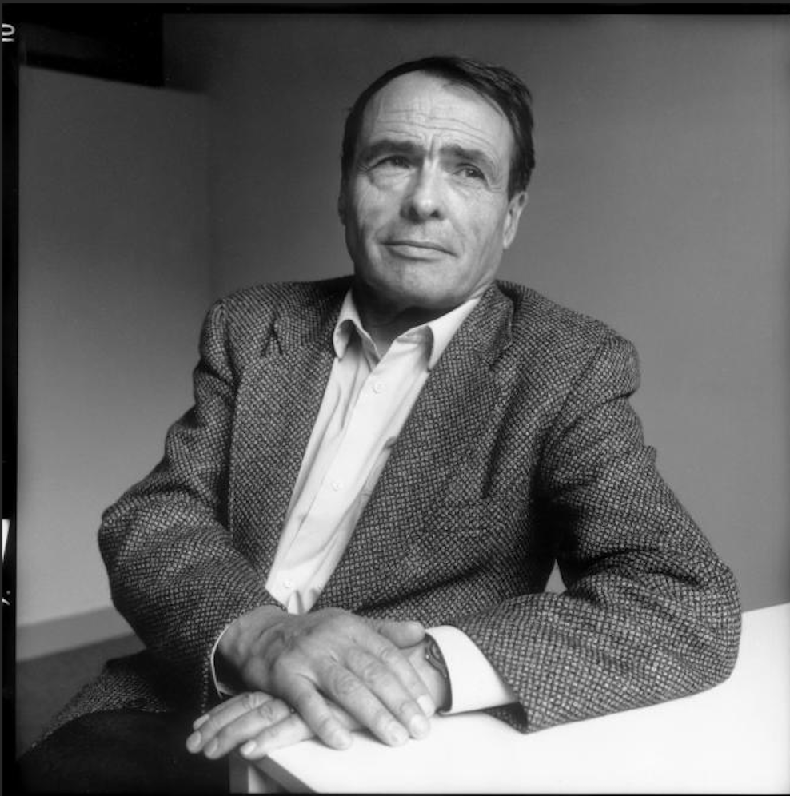
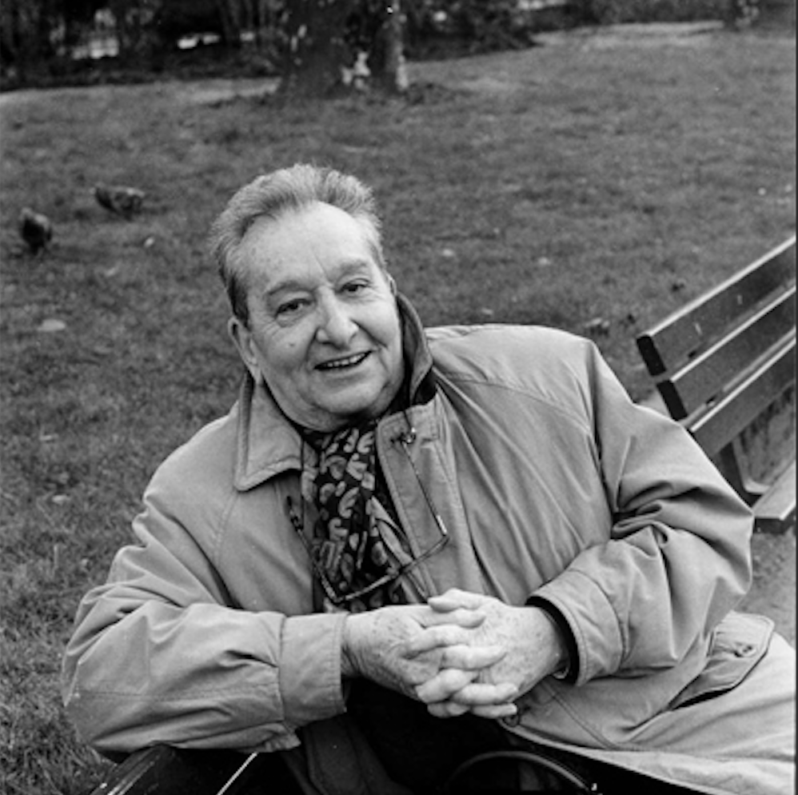

Let’s start with a banal observation: Pierre Bourdieu is one of the most influential (French) sociologists in Turkey to date, if not the most influential. A quick search on the Dergipark1 reveals that there are 124 articles with “Bourdieu” keyword. Innumerable other articles focus on or use his ideas (so lots of habitus and capitals flying around). Almost all his major works were translated into Turkish. Journal issues were dedicated to him (e.g., 74th issue of Cogito or the latest issue of Strata). He is influential and celebrated. Years ago, a colleague joyously called him a “master key” which could open all the doors (of research or what? I should have asked.)
1 Online repository of academic journals in Turkey.
Now look at Raymond Boudon. If you search his name on Dergipark, you will get nothing. And I mean nothing: nothing on keywords or articles. You can find some vague references if you search google scholar in Turkish. Three of his books were translated into Turkish.2 And unsurprisingly, he is not a well-known name in academic or intellectual circles in Turkey, if known at all.
2 Only one is still in print, Relativism, which is not available in English.
Going back to the original question, one might ask why we compare these two in the first place. Well, both were sociologists, French, born around the same time (4 years apart to be exact), and studied inequality, mobility and education, and they had some kind of rivalry. But most importantly, academics in Turkey love to import big names and their ideas. Whereas they have been very “productive” in the case of Bourdieu, they have neglected Boudon. Why?
For many, there is an easy answer: “Bourdieu is better.” And this could mean several things. It could mean that “Bourdieu has better explanations for social phenomena such as educational mobility”. “He provides a well-developed conceptual framework to analyze social inequality”. “He is way more prolific and successfully demonstrates the depth and breath of his theories in different studies.” The list could go on and I am sure a more knowledgeable Bourdieusian3 will come up with a longer/better one. So, people recognized this superiority and decided to follow the master writing about habitus, field, and capital. In other words, intrinsic qualities of Bourdieu’s work explain its prominence.4
3 Bourdieuian? Well, you figure it out.
4 This line of reasoning might seem strange. It implies that people know Bourdieu and Boudon well enough to compare and reach a conclusion. This is highly unlikely. But it also works if we assume, for now, that intrinsic qualities are the reason why people know Bourdieu but not Boudon.
Another easy answer is that “Bourdieu is more popular,” and I partly agree. As I said, we love to import ideas and what attracts us more than fame? But I do not think that it explains the extent of appeal of Bourdieu or neglect of Boudon.5
5 I think the relationship between success and fame is not straightforward.
As you might guess, I am not convinced of these answers. However, I am not invested enough in this topic to turn it into a full-fledged analysis. So, I am going to speculate using an article: Michèle Lamont’s (1987) “How to Become a Dominant French Philosopher: The Case of Jacques Derrida.” Lamont discussed how Derrida became prominent in France, i.e., how he met cultural and institutional requirements of his intellectual milieu, and later gained acceptance in the US. This study might give us some clues about what happened in Turkey.
I am not going to review or summarize this article. I am just going to take some arguments, present them in random order, and apply to my case. I hope this will lead to a more satisfactory answer.
Let’s return to the master key metaphor. It basically refers to the adaptability of Bourdieusian sociology to specific intellectual and academic requirements in Turkey. And this could happen in two ways. First, Bourdieusian sociology can be adapted to distinct research interests. For instance, the diversity of theses and dissertations using Bourdieusian sociology in Turkey is worth noting. Apart from the well-known topics such as mobility and inequality, they cover military habitus, religious field, social media, entrepreneurship, Friday sermons, field of translation studies, etc.6 Second, Bourdieu can bring together those who have an explicit interest in either empirical research or social theory. If you look for a sophisticated theoretical apparatus, you can find it in Bourdieu.7 If you look for empirical studies with diverse methodological approaches, you can find it in Bourdieu as well. So, there is a Bourdieu for everyone.
The first point could lead us to the role of intellectual public. As I mentioned above, there is a lively interest in Bourdieu’s work in Turkey. It is even possible to identify a loose group of scholars mainly inspired by his work. It might be unfair to call them “Bourdieusian” but their brand of relational sociology is highly influenced by Bourdieu. These scholars might have a chance to build a distinct institutional/intellectual base8 for their brand of relational sociology but whether they could take this chance is unclear.
Related to the previous points, Bourdieusian concepts can easily be packaged (e.g., the troika: habitus, field, capital), and recognized. You can proliferate them even further (e.g., new forms of capital, new fields). These concepts circulate among scholars, and enable them to signal each other.
Bourdieusian sociology is also politically attractive. I do not mean that scholars find an expression of their (usually left) political views in his sociology. This could be the case. But essentially, Bourdieu shows them that they do not need to respond to urgent political matters while sacrificing sociological rigor. This works quite well with the public employee and critical intellectual image of academics in Turkey.
6 And these are results from a title search only.
7 The hallmark of social theory in Turkey is review articles on European sociologists in the form of “the concept of X according to Y.” His sociology is a fertile ground.
8 Maybe, they bet on it. Who knows.
Let’s turn to Boudon and our question: why is he unknown in Turkey? First of all, Boudon espouses (a form of) methodological individualism, uses examples from game theory, and critically engaged with rational choice theory. These are rather unfamiliar subjects for sociology audience in Turkey.9 Boudon’s theoretical apparatus cannot be easily packaged for this reason. He is definitely not the master key sought after by young sociologists: his work requires some knowledge of formal analysis and mathematics. Most sociologists (and social scientists in general) in Turkey do not have a strong grasp of them. It is hard to imagine qualitative studies inspired by his sociology. It is unlikely to have a “Boudonian” approach for many social phenomena10 that interest sociologists in Turkey. So, the fit between Bourdieusian sociology and academic/intellectual milieu in Turkey is absent in the case of Boudon. The cost of importing his ideas and advertising them is high, and the expected return is low.
9 This is not the case for Bourdieu. I think sociologists are quite familiar with his intellectual precursors.
10 And probably, for a good reason.
To sum up, the difference between the two cannot be explained solely by the intrinsic qualities or popularity. The fit between the sociological approach and intellectual milieu, the presence of a receptive public, and the familiarity with the wider theoretical framework (or lack of it) provide a better explanation.
There is one last thing I want to talk about: the reason why I asked this question. I think it is unfortunate that we do not know more about Boudon and a certain kind of sociology inspired by his (and others) work. This sociology is characterized by its emphasis on microfoundations, mechanisms, and explanation. Some proponents call it “rigorous” or “scientific” sociology. Well, these are bold statements and we don’t need to go that far.11 But it is a tradition neglected in Turkey with some valuable contributions.
11 It is a risky business to call what you do as “scientific” while dismissing others.
References
Citation
@online{t.e.g.2022,
author = {T.E.G.},
title = {Bourdieu and {Boudon:} {Why} {One} Is {Revered} and the
{Other} {Neglected} in {Turkey?}},
date = {2022-08-29},
url = {https://tegedik.github.io/posts/BvsB},
langid = {en}
}